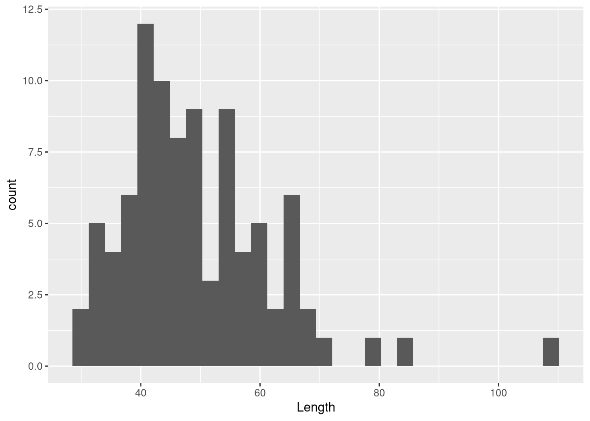
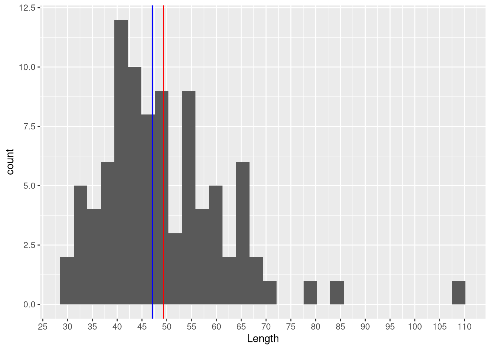

ggplot(data = df_dartpoints, mapping = aes(x=Length))+
geom_histogram()Descriptive statistics
Descriptive Statistics
Brainstorming
Run this code:

- what do you think this plot shows?
- which lengths are more represented?
- do you see any extreme values?
Characterizing centrality
Mean (aritmetický průměr)
- mean, or average, is the sum of all values divided by the number of values
- we already know function
mean()for arithmetic mean:
mean(df_dartpoints$Length)[1] 49.33077Median (medián)
medians is the value separating data into lower half and an upper half, i.e. 50 % of the values are less than or equal to the median and 50 % are greater than or equal to the median
median is more robust and minimizes influence of outliers
use function
median()
median(df_dartpoints$Length)[1] 47.1
What are outliers? (odlehlé hodnoty)
- Outliers are data points that significantly differ from other observations.
- May indicate a measurement error, an exceptional observation, etc.
Characterizing dispersion and/or spread
Range (rozpětí)
max(), min() or range()
max(df_dartpoints$Length)[1] 109.5range(df_dartpoints$Length)[1] 30.6 109.5Variance and Standard deviation (rozptyl a směrodatná odchylka)
sd()
sd(df_dartpoints$Length)[1] 12.73619- perhaps you can argue that one value does not tell us too much about our dataset, we will touch this problem soon
Interquartile range (midspread, IQR, kvantil, mezikvartilové rozpětí)
IQR()
- Robust, minimizes influence of outliers.
Summary
- centrality and dispersion explained visually:

Exercise
Task
Use the dataset dartpoints.csv and:
count mean and median weight, how do they differ?
what is the range of the weights?
calculate 3) the mean value and 4) the standard deviation of length, BUT do it for each type (variable “Name”) of the dartpoint (use the function aggregate())
- find out which type (“Name”) of dartpoints have the highest standard deviations and try to explain what does it say about this type of dartpoints
Solution
mean(df_dartpoints$Weight)[1] 7.642857median(df_dartpoints$Weight)[1] 6.8range(df_dartpoints$Weight)[1] 2.3 28.8aggregate(Length ~ Name, data = df_dartpoints, FUN = mean) Name Length
1 Darl 39.75357
2 Ensor 42.74000
3 Pedernales 57.88125
4 Travis 51.38182
5 Wells 53.12000aggregate(Length ~ Name, data = df_dartpoints, FUN = sd) Name Length
1 Darl 6.175668
2 Ensor 5.786997
3 Pedernales 14.127197
4 Travis 9.904223
5 Wells 7.943803